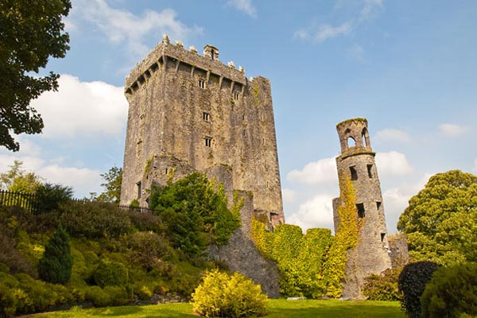
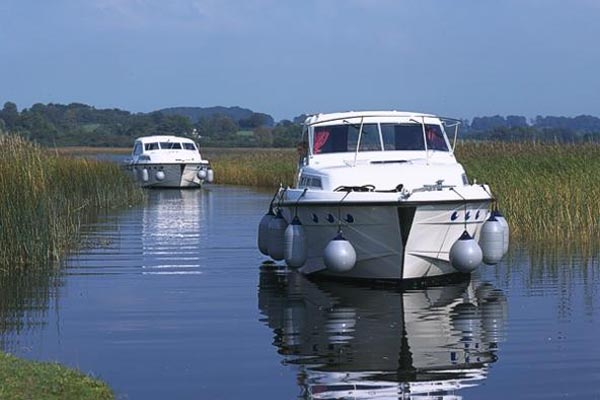
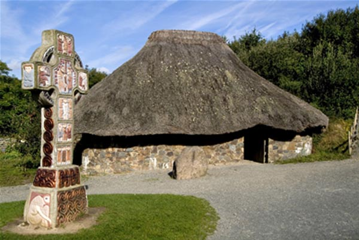
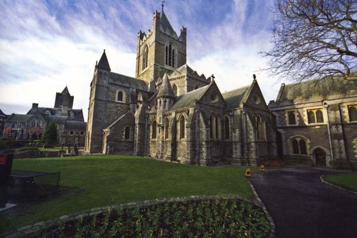

Take advantage of this slightly quieter period to enjoy some of the highlights Ireland has to offer, without having to queue
during the summer crowds.
Kiss the Blarney Stone, enjoy a peaceful cruise on the Shannon while it is not congested with boats,
take a historic trip to the National Heritage Park, and enjoy the beauty of Christ Church Cathedral and a visit to Dublinia viking display.

Blarney Castle
This historic castle is most famous for its stone, which has the traditional power of conferring eloquence on all who kiss it. The word
blarney was introduced into the English language by Queen Elizabeth I and is described as pleasant talk, intended to
deceive without offending. The stone is set in the wall below the battlements and to kiss it, one has to lean backwards, (grasping
an iron railing) from the parapet walk.
There are pleasant walks along the riverbanks where you can sit and contemplate the reflections of the castle. In springtime the
castle grounds are filled with thousands of bulbs and the "Belgian beds", full of hybrid azaleas are in full flower. In autumn the
whole place glows as the leaves turn red, amber and gold.
The Rock Close is a mystical place where majestic yew and oak trees grow around an ancient druidic settlement. Follow the trail through giant Gunnera leaves
and bamboo and you will find such features as a dolmen, wishing steps and a witch's kitchen.
Link to Discover Ireland website for more info

Cruising on The Shannon
Emerald Star is one of Ireland's most prestigious boating holiday companies established for over 34 years, having over 200 cruisers offering a wide selection of craft,
ranging from intimate two berth, up to size ten berth boats. Locations of the three cruiser stations have been chosen so that you can experience different
types of cruising waters.Base stations are located at different places along the Shannon.
You can go your own route and choose a pace that suits you. One Way holidays are also possible between Carrick and Belturbet or Portumna and Carrick.
All the villages where you stop have easily accessible landing stages which you can use free of charge.
Link to Discover Ireland website for more info

The National Heritage Park
The National Heritage Park, in Ferrycarrig County Wexford, covers 35 acres, takes visitors through 9,000 years of Irish history. A trail featuring prehistoric campsites, ringforts, crannogs,
Viking houses and other historic landmarks awaits discovery. There are settlements indicative of all the different periods of Ireland's cultural history,
depicting man's first settlements in Ireland up to the arrival of the Normans in the 12th C.
Ringfort Reopens at the Irish National Heritage Park! The ringfort has been almost completely rebuilt, and surrounded with a massive timber rampart which required
the felling of some 400 Irish oaks. Inside, the two "old" buildings have been rethatched in different styles, one using a wheat straw and the other, reed.
A new 180m trail also takes visitors deep into wet woodlands, winding between ancient trees and pools of water, to experience at first-hand what Ireland must have looked
like to our Stone Age ancestors.
Link to Discover Ireland website for more info

Christ Church and Dublinia
Christ Church Cathedral is Dublin's oldest building, a leading visitor attraction and a place of pilgrimage for almost 1,000 years. Renowned for its beauty, architecture and exquisite floor tiles,
it is home to the famous 12th Century crypt, one of the oldest and largest in Britain and Ireland.
Perfectly located in the heart of Medieval Dublin, it was founded in 1030 by Sitriuc, King of the Dublin Norsemen.
Over the years, Christ Church has borne witness to many significant events including the crowning of Lambert Simnel as Edward VI in 1487. Today, it houses the important Treasures of Christ Church
which features manuscripts and ancient artifacts as well as a spectacular exhibition of original 16th Century costumes from the historical series 'The Tudors'.
Designed by Emmy award winning designer Joan Bergin, the opulent costumes from the drama have travelled the world including a display in Macy's New York.
Link to Discover Ireland website for more info